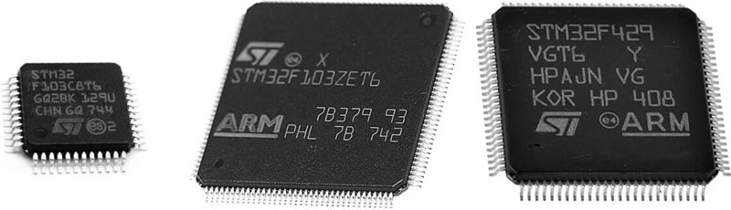
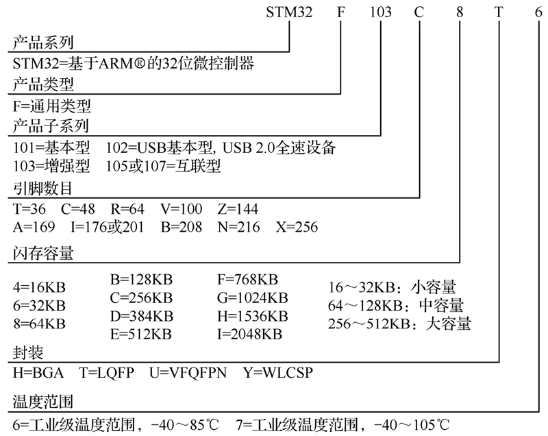
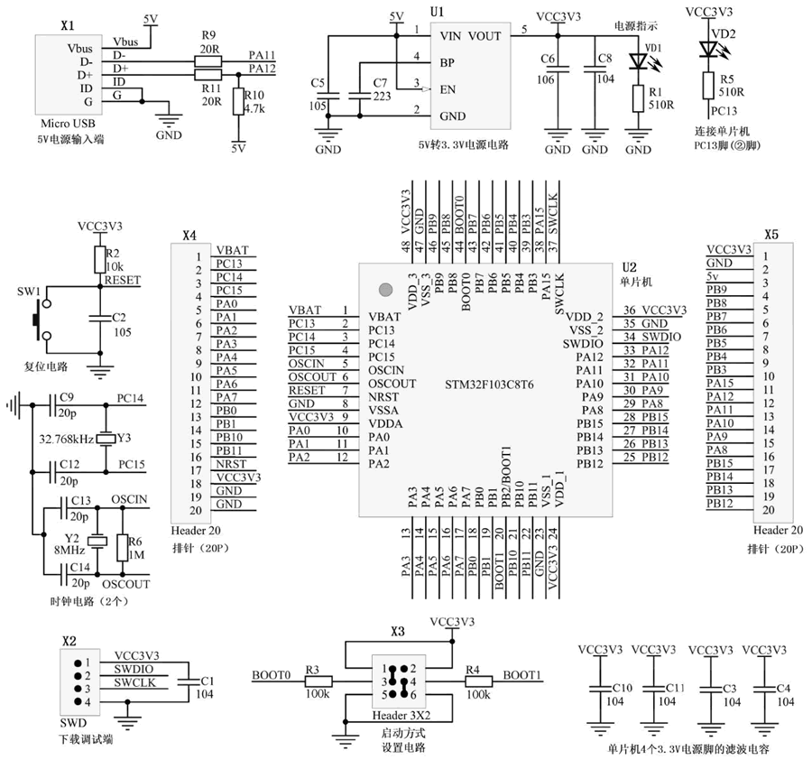

首页 > 编程笔记
STM32单片机是什么
STM32 单片机中，ST 表示意法半导体公司，M 表示微控制器（Microelectronics），32 表示 32bit，STM32 意为意法半导体公司生产的 32bit 单片机。
下图是几种常见的 STM32 单片机：
STM32 单片机采用 ARM 的 Cortex-M 内核（又分为 M0～M7 内核），不同系列的 STM32 单片机采用的内核见下表。
以 STM32F1xx 系列为例，STM32单片机的型号含义如下图所示：
单片机芯片与提供基本工作条件的电路（电源电路、时钟电路、复位电路和程序下载电路）一起，就构成了单片机的最小系统电路。
例如，下图是 STM32F103C8T6 单片机的最小系统电路原理图，该电路主要由 STM32 单片机芯片及其工作必需的电源电路、复位电路、时钟电路、启动方式设置电路和下载调试端组成。
为了方便测试该最小系统能否正常工作，在单片机的 PC13 端（② 脚）外接了一个发光二极管 VD2，测试时，往单片机下载驱动 VD2 闪烁发光的程序，若 VD2 会闪烁发光，则表明该系统可正常工作。
下图是几种常见的 STM32 单片机：

图 1 几种常见的STM32单片机
图 1 几种常见的STM32单片机
STM32 单片机采用 ARM 的 Cortex-M 内核（又分为 M0～M7 内核），不同系列的 STM32 单片机采用的内核见下表。
| 系 列 | 内 核 | 说 明 |
|---|---|---|
| STM32-F0 | Cortex-M0 | 入门级 |
| STM32-L0 | 低功耗 | |
| STM32-F1 | Cortex-M3 | 基础型，主频 72MHz |
| STM32-F2 | 高性能 | |
| STM32-L1 | 低功耗 | |
| STM32-F3 | Cortex-M4 | 混合信号 |
| STM32-F4 | 高性能，主频 180MHz | |
| STM32-L4 | 低功耗 | |
| STM32-F7 | Cortex-M7 | 高性能 |
以 STM32F1xx 系列为例，STM32单片机的型号含义如下图所示：

图 2 STM32单片机的型号含义
图 2 STM32单片机的型号含义
STM32单片机的最小系统电路
单独一块单片机芯片是无法工作的，需要增加外围电路给芯片提供电源、时钟信号和复位信号，为了能将编写的程序下载到单片机芯片，还应有下载电路。单片机芯片与提供基本工作条件的电路（电源电路、时钟电路、复位电路和程序下载电路）一起，就构成了单片机的最小系统电路。
例如，下图是 STM32F103C8T6 单片机的最小系统电路原理图，该电路主要由 STM32 单片机芯片及其工作必需的电源电路、复位电路、时钟电路、启动方式设置电路和下载调试端组成。

图 3 STM32F103C8T6单片机的最小系统电路原理图
图 3 STM32F103C8T6单片机的最小系统电路原理图
为了方便测试该最小系统能否正常工作，在单片机的 PC13 端（② 脚）外接了一个发光二极管 VD2，测试时，往单片机下载驱动 VD2 闪烁发光的程序，若 VD2 会闪烁发光，则表明该系统可正常工作。
关注公众号「站长严长生」，在手机上阅读所有教程，随时随地都能学习。内含一款搜索神器，免费下载全网书籍和视频。

微信扫码关注公众号